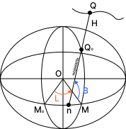
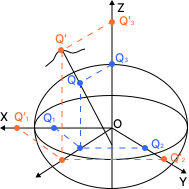
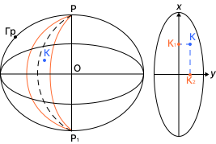

СИСТЕМЫ КООРДИНАТ И ИХ КЛАССИФИКАЦИЯ
Обзор основных систем координат: пространственные прямоугольные, геодезические и плоские прямоугольные.
Их взаимосвязь и области применения.
Для решения различных задач, связанных с осуществлением хозяйственной деятельности на территории государства или его субъектов, приходится использовать разные системы координат. Каждая из систем координат имеет свои достоинства и недостатки, которые делают удобным или неудобным использование той или иной системы.
Международная служба вращения Земли (IERS) различает теоретические системы координат (Terrestrial Reference System — TRS) и их практическую реализацию (Terrestrial Reference Frame — TRF). Теоретическая система опирается на фундаментальную физическую теорию; реализация — на набор пунктов геодезической сети с координатами, полученными в данной системе отсчёта на определённую эпоху.
За координатную поверхность в геодезии принимают земной эллипсоид. Измерения на физической поверхности Земли редуцируют на эту поверхность или на плоскость геодезической проекции. Основные группы систем: геодезические пространственные (B, L, H), пространственные прямоугольные (X, Y, Z), плоские прямоугольные (x, y).
Система координат — это набор математических правил, устанавливающих точкам пространства соответствующие значения координат. В геодезии используются преимущественно земные системы координат, связанные с нашей планетой и участвующие в её суточном вращении вокруг своей оси.
В системе геодезических пространственных координат положение любой точки пространства можно задать тремя координатами: геодезической широтой B, геодезической долготой L и геодезической высотой H.

Определения основных элементов
Острый угол, образованный нормалью к поверхности эллипсоида вращения и плоскостью его экватора. Изменяется от 0° на экваторе до 90° на полюсах. Различают северные и южные широты.
Двугранный угол между плоскостями начального (Гринвичского) меридиана и плоскотью геодезического меридиана проходящего через заданную точку. Изменяется от 0 до 360° или от 0 до 180° на восток и запад от гринвичского меридиана.
Отрезок нормали к поверхности эллипсоида вращения, заключённый между этой поверхностью и заданной точкой. Обычно положительна, но может быть отрицательной (в шахтах, карьерах).
Достоинства системы (B, L, H)
- Едина для всей поверхности Земли и позволяет однозначно определять положение любой точки пространства.
- Координатные линии — геодезические меридианы и параллели — являются основными линиями в любой картографической проекции.
- Геодезические широта и долгота определяют положение нормали к поверхности эллипсоида, что используется при определении уклонений отвесных линий.
- Геодезическая широта и долгота точек одинаковы, а высоты разные.
- Поправки (редукции) за переход с физической поверхности Земли на эллипсоид обычно незначительны.
Недостатки системы (B, L, H)
- Вычисление широт и долгот затруднено, так как решение прямых и обратных геодезических задач выполняется по сложным громоздким формулам.
- При использовании ГНСС-технологий поправки за редукцию на поверхность эллипсоида становятся соизмеримыми с самими измерениями, что делает применение этой системы неудобным.
За начало координат принимается центр эллипсоида O. Ось OZ направлена вдоль полярной оси на северный полюс, ось OX лежит в плоскости гринвичского меридиана и экватора, ось OY дополняет систему до правой (рис. 3.1). Такая система является геоцентрической и используется при обработке данных ГНСС.

Положение точки в системе (X, Y, Z)
Достоинства системы (X, Y, Z)
- Однозначное определение положения любой точки пространства.
- Не требуется иметь поверхность относимости (поверхность эллипсоида вращения).
- Отсутствует необходимость в редуцировании результатов полевых измерений на поверхность относимости — практически незаменима при обработке спутниковых измерений.
Недостатки системы (X, Y, Z)
- Нельзя уменьшить размерность задач — необходимо сразу выполнить достаточное количество измерений для вычисления всех трёх координат.
- Неудобно использовать в топографии, землеустройстве и кадастре.
- Отсутствуют строгие формулы для прямого перехода от (X, Y, Z) к плоским координатам Гаусса–Крюгера (x, y).
При производстве массовых топографо-геодезических работ (топографические и кадастровые съёмки, геодезическое обеспечение проектирования и строительства) наибольшее применение находит система плоских прямоугольных координат. На территории России используется проекция Гаусса–Крюгера — равноугольная (конформная) проекция эллипсоида на плоскость.

Зонирование в проекции Гаусса–Крюгера
В проекции Гаусса–Крюгера поверхность эллипсоида вращения делится на зоны геодезическими меридианами. В России установлены размеры зон в шесть и три градуса по долготе. Шестиградусные зоны считаются основными — в них выполняется математическая обработка результатов измерений и оформление материалов топосъёмок. Трёхградусные зоны используются при производстве крупномасштабного картографирования (масштабов 1:5 000 и крупнее).
Условные координаты
Для исключения отрицательных ординат и для указания зоны в каталогах координат помещают условные координаты:
Достоинства системы (x, y)
- Отсутствие угловых искажений (равноугольность проекции).
- Зоны совершенно одинаковы — формулы не зависят от номера зоны.
- Пара координат (x, y) однозначно определяет положение точки внутри одной зоны.
- Значительно упрощает решение задач геодезии, топографии и землеустройства.
Недостатки системы (x, y)
- Трудности при обработке на объектах, вытянутых вдоль параллели и расположенных в нескольких зонах.
- Действительные координаты не дают представления о местоположении точки на Земле (она может быть в любой из 60 шестиградусных зон).
При развёртывании поверхности эллипсоида на плоскости только осевые меридианы зон и экватор изображаются прямыми линиями. Все остальные кривые поверхности эллипсоида (граничные меридианы, параллели и др.) остаются кривыми линиями.
Системы координат делятся на общеземные и государственные (референцные). Общеземные системы охватывают всю поверхность Земли и привязаны к её центру масс; государственные — к территории отдельного государства и используют референц-эллипсоид, согласованный с физической поверхностью данной страны.
Общеземные системы координат
Общеземные системы являются геоцентрическими: начало координат совпадает с центром масс Земли, ось Z направлена на полюс, ось X — в плоскости гринвичского меридиана и экватора. Они применяются в спутниковой геодезии, навигации и международном обмене данными.
- WGS-84 — мировая геодезическая система, используемая GPS и большинством международных сервисов (с 1987 г.).
- ПЗ-90.11 — общеземная система координат ГЛОНАСС, обновлённая версия ПЗ-90 (с 2017 г.).
- ITRF — международная земная референцная система, реализуемая через наборы ITRF с привязкой к эпохе.
Государственные системы координат Российской Федерации
Государственные системы координат РФ являются референцными: их начало и ориентация осей выбраны так, чтобы обеспечить наилучшее согласование с физической поверхностью территории страны.
| Система | Назначение | Год ввода | Статус |
|---|---|---|---|
| СК-42 | Плановые и высотные работы (историческая) | 1946 | Заменена СК-95 |
| СК-95 | Плановые и высотные работы | 2002 | Действующая (референцная) |
| ГСК-2011 | Геоцентрическая система для ГНСС и кадастра | 2017 | Действующая (основная) |
СК-42 и СК-95 — классические референцные системы с началом, смещённым относительно центра Земли; координаты в них задаются в виде геодезических (B, L, H) и плоских (x, y) координат. ГСК-2011 — современная геоцентрическая система, согласованная с ITRF; предназначена для спутниковых определений, цифрового картографирования и единого пространства данных.